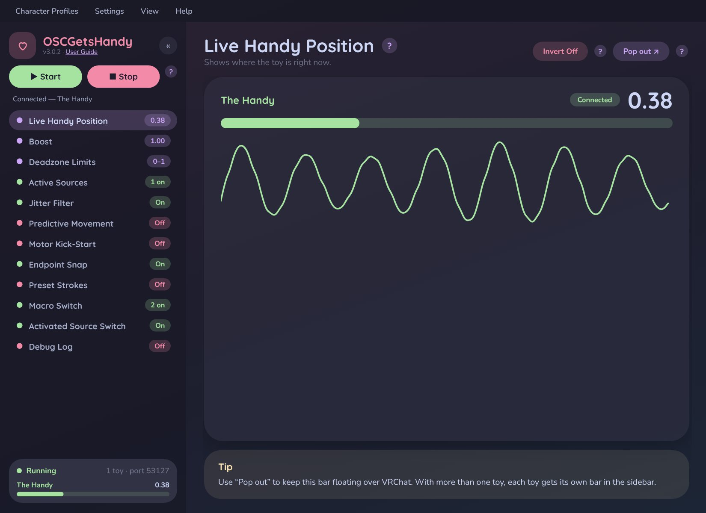
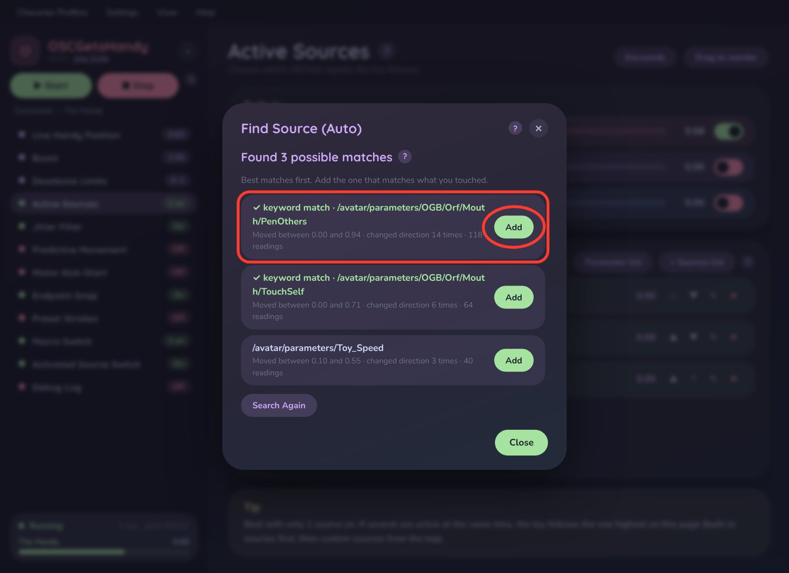
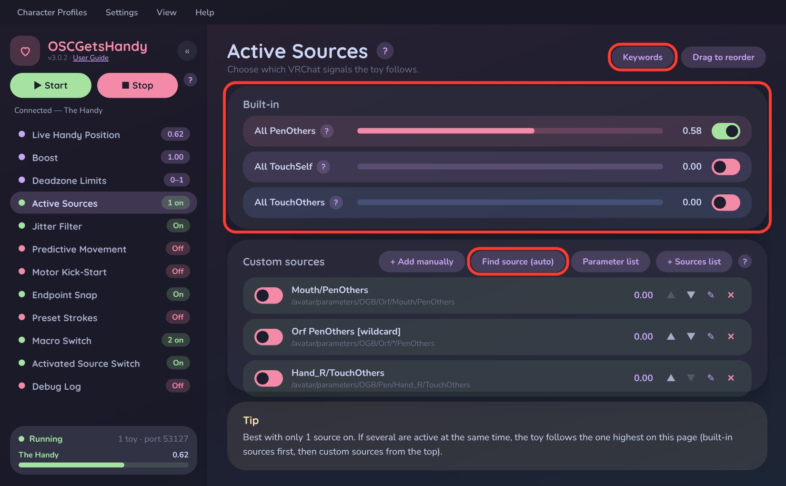
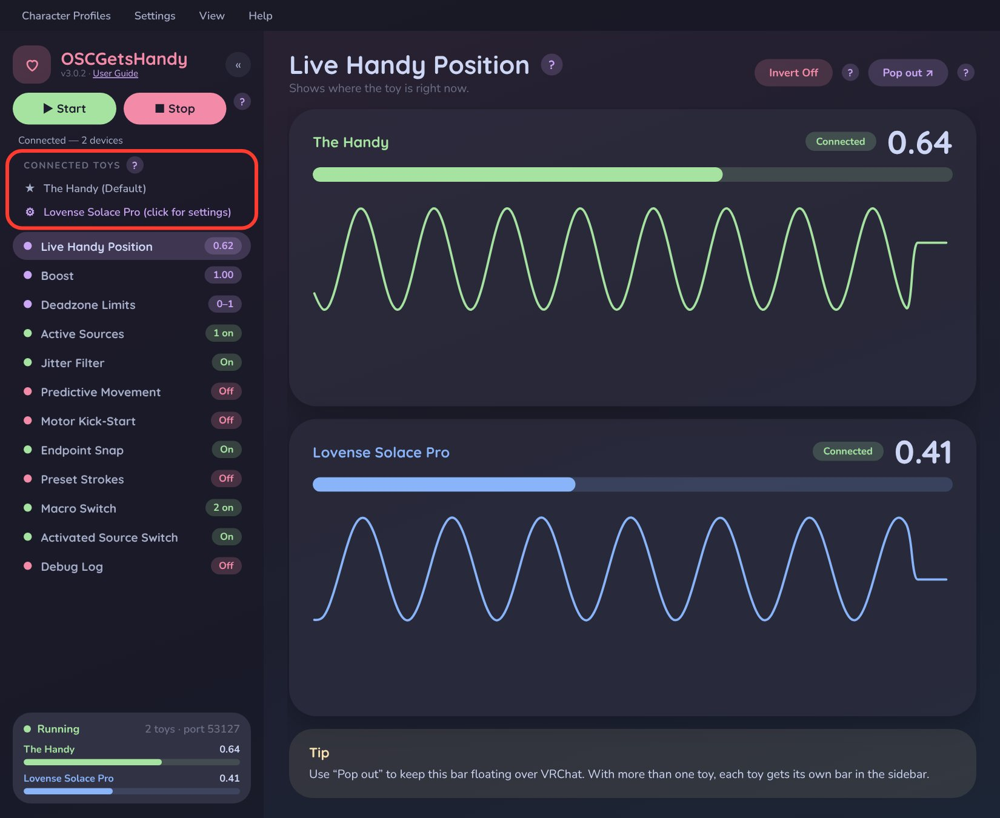
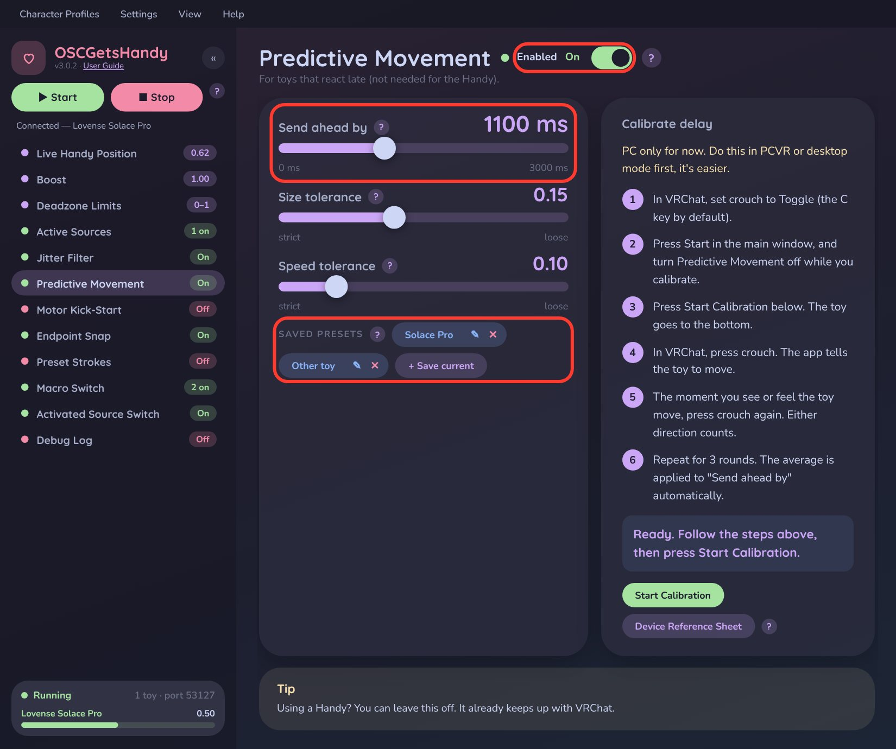
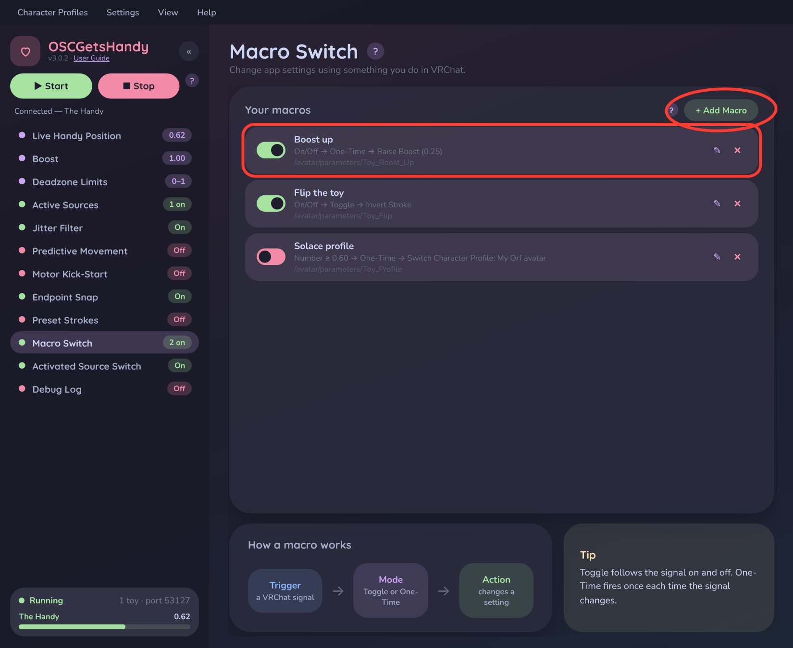
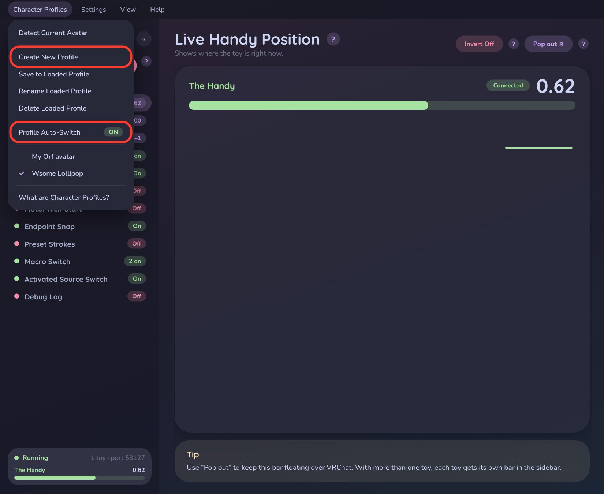
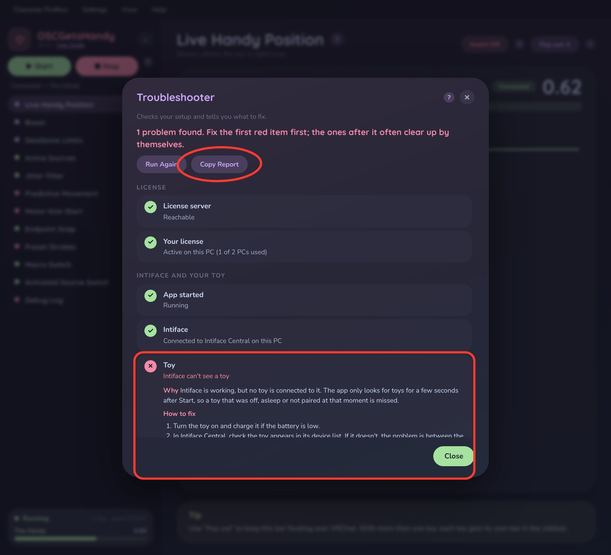

VRChat → Real Life
Make your toys move with VRChat
OSCGetsHandy bridges VRChat's SPS / OGB parameters straight to The Handy, Lovense, and any Buttplug-compatible toy — real-time, low-latency, and built for reliability.
OSCGetsHandy bridges VRChat's SPS / OGB parameters straight to The Handy, Lovense, and any Buttplug-compatible toy — real-time, low-latency, and built for reliability.

Not sure which VRChat signal should control your toy? Press Start Test and listen for three chimes — hold still, touch it, finished — and OSCGetsHandy lists the signals that moved only while you were touching, best match first. It works with your headset on.
Read the full guide →
All PenOthers, All TouchSelf and All TouchOthers work with any avatar, whatever its parts are named — no setup.
Need something else? Add your own from the Sources list, the full Parameter list, or by hand (exact or wildcard). Drag to set priority, and the app warns you if several sources are on at once.
Read the full guide →
Connect The Handy and a Lovense device (or more) at the same time. The ★ Default toy follows the main window; click any other toy to give it its own Boost, Deadzone, Jitter and Predictive Movement settings — and choose which sources move it.
Every connected toy gets its own live position bar.
Read the full guide →
Learns the rhythm of your strokes, then sends each move slightly early so devices that react late — like the Lovense Solace — line up with what you see in VRChat.
Measure your toy's exact delay with Calibrate Delay using VRChat's crouch toggle, and save your settings as named presets per toy.
Read the full guide →
Let something you do in VRChat change a setting in the app. Flip a toggle in your avatar menu to turn Preset Strokes on, raise Boost, flip Invert, or load a different Character Profile.
Read the full guide →
A profile remembers all your settings — Boost, Deadzone, Predictive Movement, sources and more — for one avatar. Turn on Profile Auto-Switch and the right profile loads by itself whenever you change into that avatar.
Read the full guide →
One click checks your license, Intiface, your toy and what VRChat is actually sending — step by step, in plain English — with the likely cause and the exact fix right under anything that's wrong. Copy the report and send it to support if you're still stuck.
Read the full guide →
Learns the range you've been using and stretches it, so small movements still give full strokes.
Read the guide →Sets the lowest and highest point the toy is ever allowed to reach.
Read the guide →Ignores tiny wobbles in VRChat's signal so the toy doesn't twitch when it should be still.
Read the guide →Extra speed right after each direction change, for speed-controlled toys with slow motors.
Read the guide →Sends positions close to the very top or bottom the whole way, so strokes actually reach the ends.
Read the guide →A steady up-and-down motion while a source is active — perfect for vibration-only signals.
Read the guide →Use a gesture in VRChat, like sitting five times, to lock the toy onto the source you're really touching.
Read the guide →A guided walkthrough that connects your toy and finds your source. Skip any time, replay from Help.
Read the guide →A live, filterable feed of every signal and command, saved automatically so you can send it to support.
Read the guide →Hide the pages you never use and drag the rest into the order you like from the View menu.
Read the guide →Save everything from a session as a CSV file — handy for support.
Read the guide →Using Intiface on another device? Type its address in Settings and you're connected.
Read the guide →VRChat finds OSCGetsHandy by itself — no manual ports, and no clashes with apps like VRCFT.
Read the guide →Flips the direction for toys that are held or mounted the other way around.
Read the guide →Download OSCGetsHandy, run it, and enter the license key emailed to you at purchase.
Open Intiface Central, turn on your device, then press Start. OSCGetsHandy finds it automatically.
Action Menu → Options → OSC → Enabled. VRChat discovers OSCGetsHandy on its own.
Use Find Source (Auto) or the first-run tutorial to pick the signal that should move your toy — your avatar now drives it in real time.
One-time purchase. Lifetime updates.